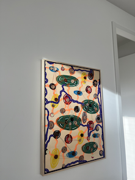

art
Welcome to the creative and delectable world of Nivawo
As a child, I remember very vividly, being curious and explorative towards anything new. That was my main attitude. I was a dreamer, deep thinker - a kid who wanted to try out anything, supported and validated by my care givers and protectors. I was keen on doing things myself, but very eager to learn from others how to do those things, so that I could perform any task or activity on my own. As most of us grew up, we are unconsciously and unintentionally conditioned by the emotional projections of the people who raise and protect us. As kids we are prone to protection and therefor, in most cases, unintentionally held from living our true nature: playful, adventurous, explorative truth seekers. As was I, imposed by fear, doubt and anxiety towards the unknown and most of all fear of failure. I unconsciously thought myself that only those who have natural talents for creative expression, were able to make effortless art, paintings, designs, drawings and more. I thought there were creatives and math kids. The words and other forms of expression you see in any of my concepts are all intentional, flowing from my being in its most truest and deepest form. I believe that sharing my craft with the world is my Dharma - Sanskrit for life purpose.
Lobi, Nivawo